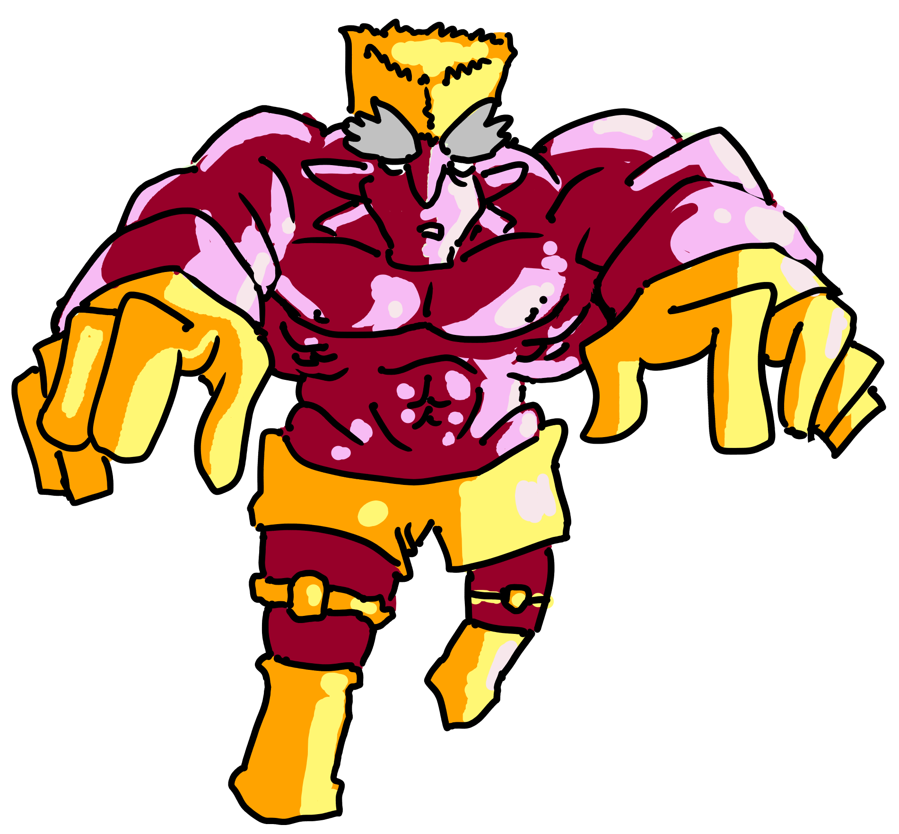

Grabber
Grapply Fae

Lv 4 Fae Creature, Experience Granted: 100, Size: 5 Foot Cube, Speed: 30 Feet
Immune blunt damage. Cannot be grappled.
HP 110, Energy 10, Defense 3
Standard Actions 2, Extra Actions 1
Toughness 16, Evasion 14, Willpower 12
Tech 14, Charm 12, Detect 16, Inspect 16, Medicine 10, Knowledge 11, Stealth 10
Grapple
Type: Attack
Action Type: Standard, Decisive
Energy Cost: 1
Grabber chooses a creature target within 5 feet of itself. The target makes either a Toughness or Evasion vs 17 roll. On a failure, the target is grappled by Grabber, and the target's speed is reduced to 0 until the target is no longer grappled. As a Standard Action, the target may make an Evasion or Toughness vs 17 roll. If that roll hits, then the target is no longer grappled.
Suplex
Type: Attack
Action Type: Standard, Decisive
Energy Cost: 1
Grabber may only do this if he is already grappling a target. Grabber chooses a target he is presently grappling. The target makes an Evasion or Strength vs 18 roll. On a failure, the target receives 10/20 blunt damage.